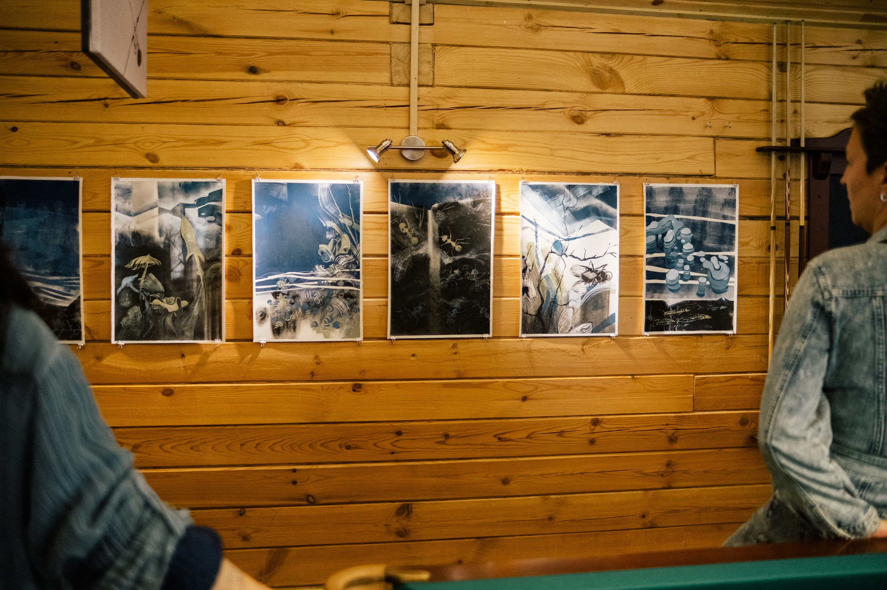
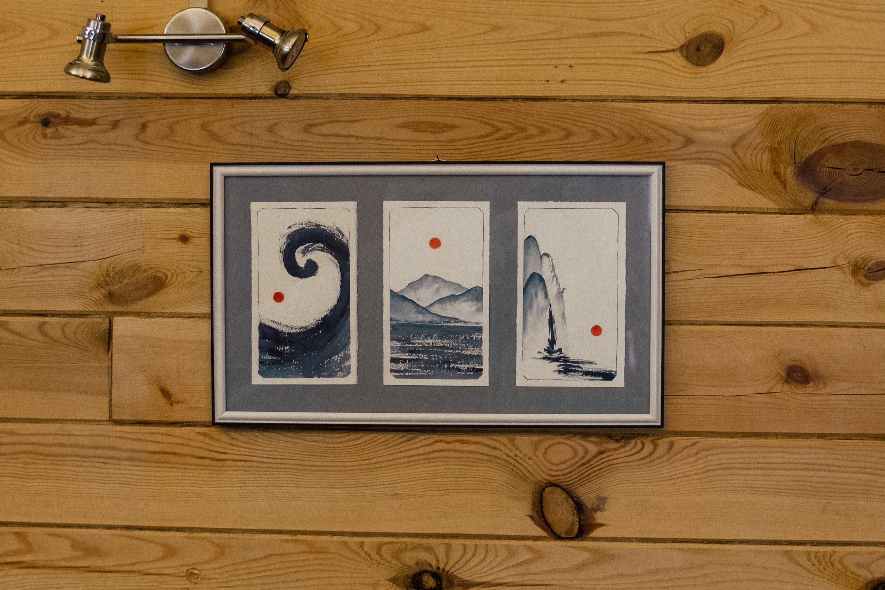
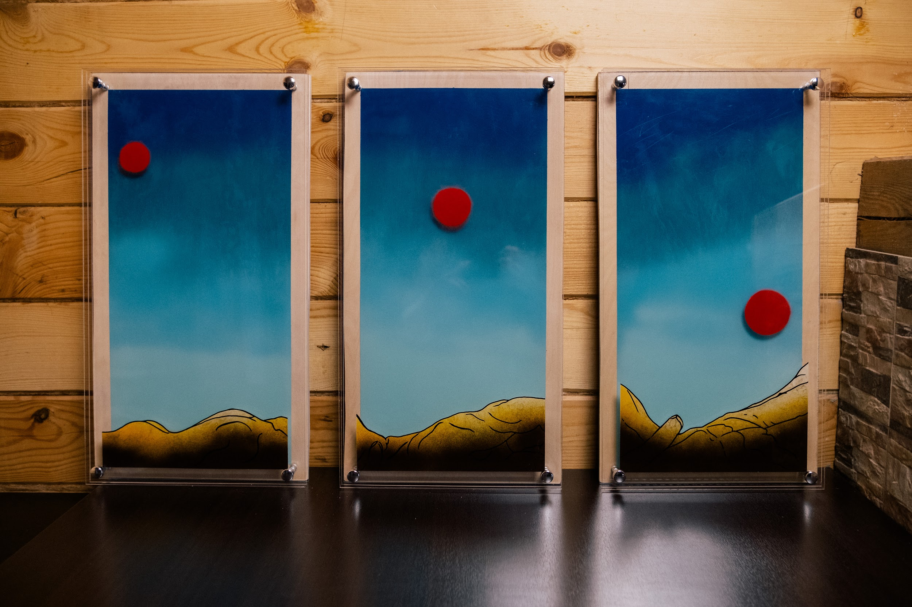
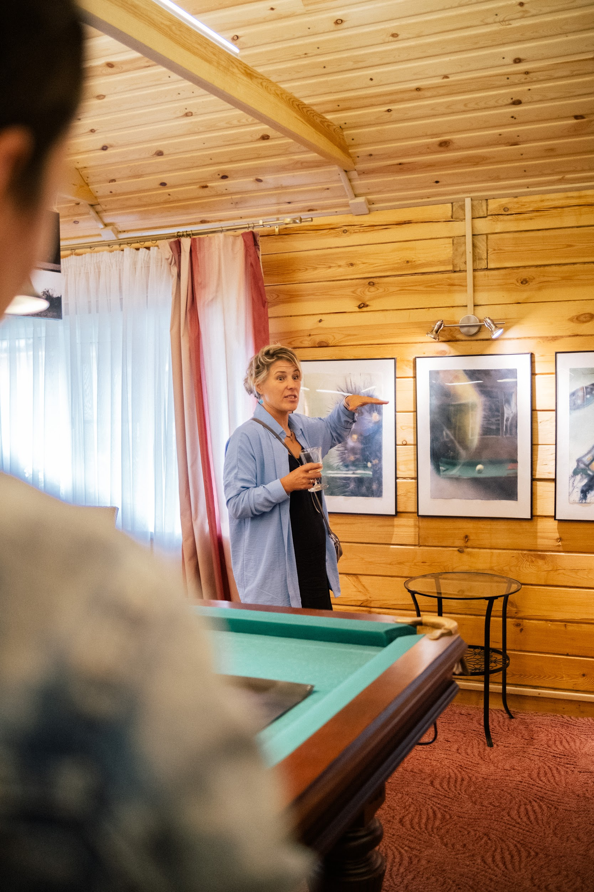

Арт-резиденция ВзаимоДействие
Май 2025 — «Реинкарнация. Переход»
Весенняя резиденция в Спирино
О резиденции
Весеннее обновление, тема цикличности, возрождения и движения вперёд.
Карина Нуриева (Санкт-Петербург)

Инсталляция «Источник», 2025
Размеры: 100×60×60 см
Материалы: дерево, сетка, мох, эпоксидная смола, поталь, песок, LED-свет
Идея работы — отразить внутренний путь человека, его поиски, трансформации и стремление к росту. Образ реки символизирует внутреннее движение и поток сознания.
Светящийся шар — душа, чистый источник, излучающий тепло, энергию и движение. Он покоится на плотной серебряной сетке, которая символизирует границу между осознанным и тем, что только начинает прорастать. От шара расходятся нити, мох и «течения» — метафоры новых связей и форм, зарождающихся внутри человека.
Каркас из четырёх рекой обточенных палок — это тело, сосуд, хрупкий, но устойчивый. Одна из палок тянется вдаль, символизируя стремление к росту и выходу за пределы. Над всей композицией — мягкая, прозрачная сетка, подвижная и незавершённая. Её форма только формируется и остаётся открытой для изменений.
Композиция намеренно неидеальна: пространство, паузы и пустоты символизируют потенциал для движения и изменений. Инсталляция не завершена в своей сути — как и сама душа, она живёт в процессе, стремлении и недосказанности. В этой незавершённости заключается подлинная жизнь.
Виктория Юдина (Москва)

Серия «Льды Сибири», 2025
Бумага, гуашь, цветные карандаши, уголь
6 листов, 60×42 см
В серии работ «Льды Сибири» исследуется скрытая жизнь, которая обитает под многослойными покровами льда и снега. Это пространственное выражение тайных глубин, как природных, так и человеческих. Под каждым слоем замёрзшей поверхности прячется своя экосистема: мухи, лягушки, муравьи и грибы — все они становятся метафорой внутреннего мира человека и его эмоций.
Работы подчёркивают глубинную связь между природой и ощущениями, акцентируя внимание на том, как важные моменты в жизни могут «растопить» лёд внутри нас. Весна в этом контексте символизирует пробуждение, когда захваченные в прошлом чувства и переживания вырываются на поверхность.
Проект исследует, как мы часто скрываем свои истинные эмоции, ждём момента, чтобы вновь «ожить» — как под тающим снегом вновь расцветает жизнь. Через визуальную метафору раскрываются моменты уязвимости и, наконец, доверия, когда мы, подобно весеннему солнцу, позволяем себе быть увиденными и понятыми. «Льды Сибири» — это приглашение к размышлению о наших внутренних мирах и о том, как важно время от времени «таять», обнажаясь перед собой и другими.
Анна Калугина (Москва)

Серия «Уроборос», 2025
Бумага, 14 листов, аэрозольная краска
Ирина Анохина (Новосибирск)

BREATH, 2025
Бумага, акварель, 14,5×21 см — 3 шт.
Триптих-миниатюра об одном цикле дыхания как модели бесконечного перерождения. Три листа. Три состояния. Вдох — пауза — выдох. Дыхание становится основой визуального повествования. Цикл без начала и конца. Нечто, что повторяется и каждый раз меняется.
Работа соединяет эстетику японской гравюры и композиционные приёмы современной манги. От гравюры — сдержанная палитра, прозрачность и недосказанность, внимание к пустоте. От манги — понимание того, как кадры могут не просто показывать, а выстраивать движение и драматургию. Здесь нет буквального сюжета, но есть направление, внутреннее напряжение, ритм.
Красная точка — как постоянная, как пульс. Она смещается, но остаётся. Иногда сбоку, иногда в центре. Она держит темп и задаёт дыхание.
BREATH — это не про пейзаж. Это про ощущение. Про движение, которое не всегда видно, но всегда чувствуется. Про время, которое проходит сквозь тело.
Ирина Анохина (Новосибирск)

INCARNATION / ВОПЛОЩЕНИЕ, 2025
Триптих, смешанная техника
Работа построена как постепенное приближение: красное небесное тело медленно движется к ландшафту, и тот начинает отзываться. Пространство теплеет, линии становятся мягче, почти телесными. Возникает напряжение. Что-то собирается случиться — но остаётся за гранью изображения.
Это наблюдение за мужским импульсом — направленным, активным, солнечным. Но не как символом силы, а как состоянием. Здесь важно не действие, а момент до: когда движение ещё не стало формой, но уже наполняет всё собой. Как позволить этому импульсу быть не только вектором, но и телом, не только стремлением, но и ощущением?
«Воплощение» не даёт финального образа. Оно остаётся в моменте до. Здесь точка — между ожиданием и приближением, между жестом и прикосновением. В этом напряжении рождается пространство, где форма ещё не определена, но уже чувствуется.
Анна Жандарова (Новосибирск)

Серия «Образ», 2025
Бумага 56×38 см, акварель
В серии работ «Образ» — мои размышления на тему поиска себя. Это визуальное представление нашей жизни как череды постоянных изменений. Даже утром после просыпания мы не те, что были вчера. Любые события — как положительные, так и отрицательные — влияют на нас. Мы постоянно проходим череду сложностей, сомнений, страхов, глубоких кризисов, падений.
Как пережить? Как не потерять себя? Как найти себя настоящего? Метафора перерождения раскрыта через цикл бабочки. Гусеница живёт свою обычную жизнь, ест, пьёт, спит, пока не наступает момент глубокого кризиса, точки невозврата, полной темноты.
Появляется куколка. Внутри этой темноты происходит огромная работа. Насекомое почти полностью растворяет себя прошлого, оставляя лишь маленькую частичку — некий «прообраз». И когда наступает момент готовности, происходит чудо — рождение переосмысленного нового имаго (образа), который с самого начала живёт в нас.
И остаётся только расправить крылья и жить свою новую жизнь. Всегда за самой глубокой тьмой есть Свет и Любовь. И в каждом из нас есть «Образ».